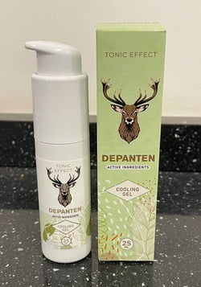
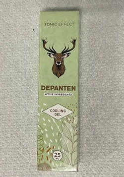

Край на ерата на болката в ставите и гръбначния стълб!
Революционната терапия на българския
професор незабавно облекчава болката и възстановява на 100% способностите на ставите и
гръбначния стълб в рамките на 30 дни
Новата терапия ще ликвидира ли бизнеса с болкоуспокояващите хапчета, както и магнитните ленти
против ставни болки? Изтъкнати ревматолози, невролози и физиотерапевти не се съмняват в това.
Със създадената от българина естествената макромолекулярна формула, настъпи дългоочакваният
пробив в борбата за възстановяване на ставите и гръбначния стълб.
Над 14 хиляди
потребителите на терапията елиминираха болката и възвърнаха пълната функционалност на ставите и
гръбначния стълб за 30 дни. В резултат на това, те спряха да се тровят с болкоуспокояващи
хапчета, да харчат пари за неефективни средства и терапии и да се редят на опашки пред
лекарските кабинети и да търсят помощ. Как е възможно това?
Професор Румен Каменов (експерт по молекулна биология) реши да излекува майка си от прогресивната артроза - той искаше да премахне хроничната болка, сковаността и пукането на ставите, както и да възстанови пълната й подвижност. Това даде началото на революция в областта на ревматологията! Професорът, след година на напреднали лабораторни изследвания, разработи естествена, безопасна и лесна за употреба макромолекулна формула, която веднага елиминира болката, възстановява ставите и гръбначния стълб, премахвайки сковаността, възпаленията, отоците и дегенерацията. В резултат на това, тя възстановява пълната си физическа активност след 30 дни.
Професионалните медицински списания вече нарекоха тази терапия „пионерско постижение в ревматологията“, а професорът за своето постижение беше номиниран за Нобелова награда. Благодарение на действието на тази формула, дори хора с много тежки и дългогодишни дегенерации, могат да възстановят ставите и гръбначния си стълб, да възвърнат пълната си физическа способност и да се освободят от съсипващите черния им дроб болкоуспокоителни.
„Разработените до момента методи за подпомагане на ставите и гръбначния стълб са загуба на време и пари!“ Какви са причините за това твърдение?
Тези думи потвърждават вече над 14 000 доволни потребители на макромолекулната формула за възстановяване на ставите и гръбначния стълб, които се отърваха от болката и възвърнаха 100% от ефективността на ставите си. Затова решихме да разгледаме познатите методи за подпомагане на ставите и гръбначния стълб. По-точно, решихме да проверим какви са техните недостатъци и с какво се сблъскват хората, които всеки ден ползват обезболяващи и рекламираните „средства за укрепване на ставите и гръбначния стълб“. Ето заключенията:
-
Упражненията само задълбочават проблема
Има много набори от упражнения за „укрепване на ставите и гръбначния стълб“, които трябва да се извършват всеки ден в продължение на няколко десетки минути. Въпреки това, тези упражнения обикновено са много болезнени. Не всеки има силата и времето да се посвети на ежедневните упражнения. По-лошото в случая е, че една малка грешка по време на тяхното изпълнение може да доведе до задълбочаване на тежката дегенерация на ставите и гръбначния стълб, което в действителност може дори да доведе до увреждане.
-
Обезболяващите средства действат временно и тровят организма
Обезболяващите средства действат до 3 часа. За да се облекчи хроничната болка, трябва да се вземат дузина от тях на ден. От своя страна, таблетките за „укрепване на ставите и гръбначния стълб“ съдържат изкуствени съставки, масово придобити на най-евтината цена. Приемът на такава химия е действие, напълно в разрез с природата - тези съставки са изкуствени, следователно човешкият организъм не ги абсорбира и не ги използва за регенериране на хрущяла. Това води до безкраен списък от странични ефекти, в това число увреждане на стомаха, слуха или бъбречна дисфункция. Това означава, че пиете хапчета с надежда за облекчаване на болката, а вместо това страдате сто пъти повече - това е абсурдно и напълно се разминава със същинската цел.
-
Магнитните ленти са плацебо
Магнитните ленти са изобретение на фармацевтичната индустрия за лесни печалби от отчаянието на хората с увреждания на ставите и гръбначния стълб. Тези продукти не помагат по никакъв начин на борбата с болката, тъй като не са в състояние да проникнат в ставния хрущял. Действието им се ограничава единствено до загряване на участъците, атакувани от проблема. Това загряване обаче води до разширяване на капилярите и в дългосрочен план само задълбочава болката и позволява възпалението и дегенерацията да продължават да се развиват. Често пъти те действат агресивно върху кожата, причинявайки тежки алергични реакции, дразнения и обриви.
-
Това е загуба на ценно време и пари, заработени с труд
Има ли смисъл да се харчат трудно заработени пари за химически средства, които не само че имат имат слаб и краткотраен ефект, но също така тровят и унищожават организма? Разбира се, че не. От своя страна упражненията, изпълнявани самостоятелно или с участието на физиотерапевт, изискват много време и не гарантират подобрение. По-лошото е, че създават риск от влошаване на болката.
Точно заради това макромолекулната терапия на проф. Каменов представлява истински пробив в борбата за здрави стави и гръбначен стълб
Хапчетата дават малко и временно облекчение, разрушават храносмилателната система и тровят тялото. От своя страна магнитните ленти са само за носене на печалби на фармацевтичната индустрия. Всичко това изтощава здравето на човека и го принуждава да харчи огромни пари. Терапията на проф. Каменов се базира изключително на натурални съставки и няма никакви странични ефекти. Незабавно облекчава болката, сковаността и щракането в ставите, възстановявайки ставния хрущял и подвижността. Тази иновативна формула съчетава в себе си най-новите постижения в областта на молекулярната биология, неврологията и ревматологията.
Включените в терапията съставки са напълно натурални и безопасни за здравето. Обаче, благодарение на съответния химичен синтез, имат с 300% по-силни регенериращи свойства. Ежедневната употреба на тези вещества възвръща двигателните способности дори при хора със сериозни и дългогодишни дегенерации, възпаления или усложнения след контузии.
Сега всеки може да си възвърне 100% здравите и силни стави
Терапията вече е в продажба под името . Макромолекулярната формула е под формата на активен хидрогел, който бързо се абсорбира и незабавно премахва болката, отоците и сковаността както на ставите, така и на гръбначния стълб. За разлика от химическите средства, макромолекулярната терапия е естествена и напълно безопасна за организма, което е доказано от допълнителните изследвания на Немския изследователски център в Дортмунд.
Тези изследвания също така показват, че терапията има повече от 98% ефикасност. Благодарение на тази терапия, хората на възраст 21 - 93 години, в рамките на само 30 дни, са постигнали зрелищни ефекти при преодоляването на болката, премахването на отоците, сковаността и противодействието на всякакви дегенерации, възпаления или усложнения след нараняване на ставите и гръбначния стълб. Без значение от възрастта и причината, както и продължителността на съществуване на проблемите.
Доказана ефикасност
Тези хора се отърваха дори от най-силната болка в ставите и гръбначния стълб веднага след използване на макромолекулната формула на проф. Каменов. Благодарение на това, те най-накрая започнаха да се движат плавно и да изпълняват всички дейности, които досега болката е предотвратявала.
През следващите дни от терапията, изследваните навлизат във фаза на интензивна реконструкция на хрущялната тъкан и синовиалната течност, благодарение на което се отървават от сковаността, изтръпванията и пукането на костите. След това са заздравили ставите, сухожилията и мускулите с 87% и са ликвидирали отоците и възпаленията. Ставите и гръбначният им стълб са подложени на автоматична реконструкция 24 часа в денонощието.
В резултат на това са ликвидирани дегенерацията на ставите и гръбначния стълб, а изследваните, освобождавайки се от болката, са получили средно 3 пъти повече енергия. Но това не е всичко. След 30-дневната терапия участниците в изследванията единодушно признават, че са възвърнали двигателната си дееспособност от ранната младост. Днес могат да ходят, бягат и танцуват без болка или притеснително пукане в ставите - точно така, както са го правили на 20-25 години!
Документираните ефекти от терапията говорят сами за себе си:
възвърнат комфорт на движенията
премахване на сковаността, изтръпванията и пукането в костите
ликвидиране на отоците и възпаленията
възвръщане на двигателната изправност на 100%
Първа седмица
Втора седмица
Трета седмица
Четвърта седмица
1-ва седмица - незабавно намаляване на болката; възстановяване на комфорта при движението
2-ра седмица - интензивно възстановяване на хрущялната тъкан и синовиалната течност; премахване на сковаността, изтръпването и пукането на костите
3-та седмица - подсилване на ставите, сухожилията и мускулите с 87%; елиминиране на отоците и възпаленията
4-та седмица - премахване на дегенерацията на ставите и гръбначния стълб; възстановяване на физическата изправност на 100%
Г-жа Мариана Василева (68 години) и г-н Здравко Василев (66 години) от Видин са едни от първите в България, които са използвали :
Мариана: „Със съпруга ми имаме екоферма от години, това е целият ни живот. Сега станаха модерни екологичните продукти, а това е свързано с повече работа. Радвахме се до момента, в който ставите ни не започнаха да се съсипват. Аз получих болки и схващане в ръцете и лактите, а освен това гръбнакът ми пукаше. Съпругът ми го удари в коленете и бедрената става. Но даже и не си помислихме да изоставим земята, заради някакви си болки. Навреме разбрахме за . Ако не се бяхме възползвали - щеше да е най-голямата грешка в живота ни! И двамата се чувствахме като немощни старчета, а 4 седмици бяха достатъчни и сега работата ни върви по- бързо и от на племенниците ни! Съпругът ми ходи на пазар с колелото, аз с удоволствие плета. Никаква болка, пукане, схващания, отоци не получаваме. На сватбата на дъщеря ни останахме последни на дансинга. Може ли да има нещо по-хубаво? Огромни благодарности!“
Защо да се обричате на инвалидност, след като можете по естествен начин, безопасно и ефикасно да се освободите от болката и да възстановите дееспособността си на 100%?
Ефективността на е доказана извън всякакво съмнение от германския изследователски център в Дортмунд. Професор Каменов непрекъснато получава номинации за награди за научни открития, включително номинация за Нобелова награда.
Добрата новина е тази, че можете да получите за участие в клуба за отстъпки с допълнително финансиране , по-евтино. Специалната оферта е валидна до края на . Терапията можете да получите посредством сайта по-долу.


Коментари
Прочетете коментарите към статията „Край на ерата на болките в ставите и гръбначния стълб! Революционната терапия...“
Тодор
а казват че българите нямали успехи по света. много добро постижение ,браво на нашия сънародник
боби
Възползвах се от този хидрогел, взех го за участие в клуба за отстъпки, струваше толкова малко пари, а коляното вече не ме боли и спря да пука при движение! Чувствам се като нова. Препоръчвам го от все сърце 
Мартина
Използвах терапията за шийните прешлени и китките, болката изчезна като на шега - след половин година специални масажи и процедури, които не подействаха!!!!!!! не губете време, просто използвайте формулата на професора
София
И-ха, тъкмо преглеждах порталите да намеря нещо добро при възпаление и оток на ставите. Това е поредният портал, където се описва тази терапия, трябва да си я набавя:)
Йонко
И аз искам да напиша нещо. 6 години страдам от болки в коленете. Годините работа във завода си дадоха отражение. за различни средства, превръзки за коляно, ленти и други чудесии дадох общо 5 000, което пак не е чак толкова, но ако погледнем колко е средната пенсия, ви става ясно нали? И никакви лекарства не ми помогнаха, имах само стомашни проблеми. Същото беше и с онези ленти, магнитни, само заблуждават хората да си харчат парите, а ефект никакъв! А преди три седмици получих този препарат от дъщерята и чак аз се учудих. Намазах се веднъж и болката изчезна. Пукането го няма, лесно си движа коляното. Даже на внучката на тротинетката се качих и покарах, как само се смяхме. не знам дали при всеки действа, но на мен ми подейства! струва си да опитате
Андрей
аз също го ползвам и ми действа добре. Едва от две седмици го използвам, а вече забравих за болката и не мисля, че отново ще се появи. Най-после мога да живея нормално.
Мария
влизайки на тази страница не очаквах че ще прочета такива чудеса. Трябва да имам тази терапия тогава. До гуша ми дойде от ужасната болка в бедрата и коленете. Най-накрая ще се отърва - прекрасно!
Мери
Използвам хидрогела от една седмица и се чувствам чудесно, не мога да опиша облекчението си ... Нямам никакви странични ефекти или нещо такова ... за мен това е най-хубавото нещо под слънцето ... толкова много пари похарчих за различни масажи и лечения, които с нищо не помагат. Нищо друго няма да опитам повече ...
Мишо
Използвах този клуб за отстъпки, за да получа . Искам да се отърва от болките в гръбначния стълб, краката и лактите, защото ме очаква важно събитие - ще ставам дядо, затова трябва да съм здрав! Ефектите според мен са феноменални, два пъти дневно го ползвах и болката изчезва веднага след намазване, с нетърпение чакам края на терапията
Aнa
Майка ми е стара вече, затова имам въпрос за вас - какво сте използвали, на колко сте години, има ли възрастни хора на 80 години или техните семейства / приятели? Искам да знам дали има шанс за мама. Тя едва се движи, има ревматични болки. Чувствам съжаление за нея и се притеснявам. Моля, отговорете. Ана
Димо
@Ана, откакто разбрах за тази терапия започнах да я използвам за гръбначния стълб, помага ми, затова я подарих на баща си, а той е на 93 години, знаете едва се движеше. А дотолкова се подобри, че се облече официално и накара майка ми да танцуват:) препоръчвам го и на майка ви
Aнa
@дамян Ха-ха:) страхотно, много здраве за баща ти. Благодаря ти много за отговора. в такъв случай ще подаря на майка ми тази терапия
Веси
също я използвах, за рамото и бедрото след травма, премина ми за секунди :) поздрави и препоръчвам 
Ива
искам веднага да го пробвам обаче имам опасения че може да не подейства. вече много пари съм дала за неефикасни неща
Ива
аа! точно прочетох че има някаква гаранция значи всичко е наред. ще го пробвам дано да ми помогне
Антон
Моят приятел го използвал този гел и преди известно време ми го препоръча. Присъединих се към този клуб и получих пратката само за 3 дни (макар да не хванах това намаление, жалко). Досега резултатите са по-добри, отколкото си мислех - болката премина, подуването изчезна и се чувствам по-добре с всеки изминал ден! Не мога да дочакам какво ще стане през 3-та и 4-та седмица.
Филчо
аз чакам доставка с терапията, скоро ще пиша как е